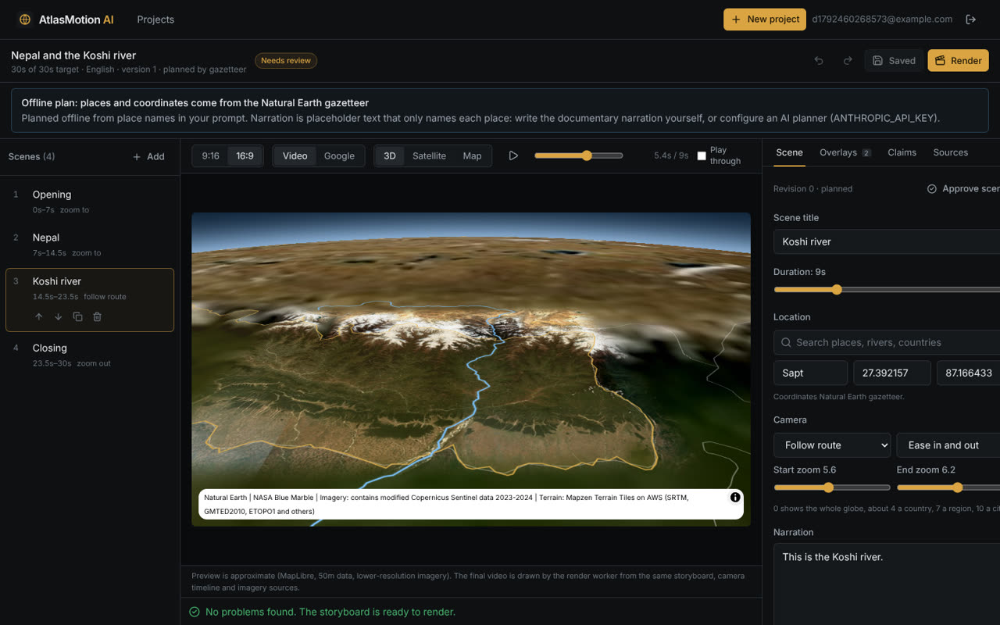
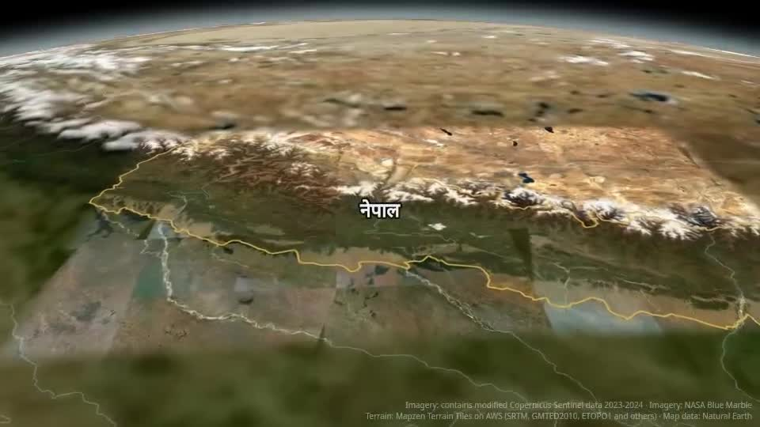
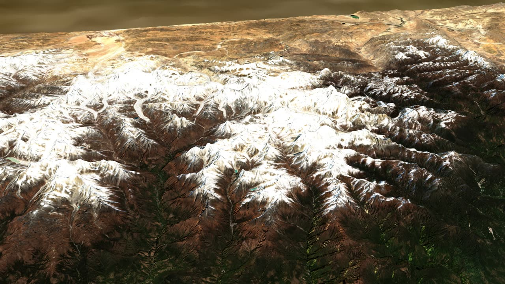

Describe a story about a place in Hindi or English. AtlasMotion plans the scenes, flies a camera over real satellite imagery and terrain, draws borders, rivers and labels, adds narration and captions, and renders validated MP4s in 9:16 and 16:9.
Everything in the video comes from sources whose licences allow it, and every frame credits them.
An offline gazetteer planner, or Claude when an API key is set, turns your prompt into scenes. Coordinates always come from Natural Earth, never invented.
Satellite imagery draped over real elevation, with a tilted camera that zooms, follows routes and slowly turns.
Reorder scenes, edit narration, labels, routes, arrows and legends, and preview the camera live before rendering.
Narration claims without a source are flagged and block the render until you resolve them.
Offline speech (espeak-ng), loudness normalisation, and Hindi or English captions burned in or as .srt.
Every MP4 is checked with ffprobe and a full decode. Only files that pass are offered for download.
A pnpm monorepo: React studio, Express API, BullMQ render worker, MongoDB and Redis.



Exported videos never use Google imagery. Google's terms allow Map Tiles API footage only in short promotional videos about your own app, and Google Earth Studio has no commercial licence. The editor can show a live Google Maps satellite preview when a key is configured.
| Source | Used for | Licence |
|---|---|---|
| Copernicus Sentinel-2 | Sharp imagery in prepared regions (Nepal today) | Free and open, commercial use with attribution |
| NASA Blue Marble | The globe and wide shots | Public domain |
| Terrain Tiles on AWS | Elevation for the 3D view | Free with attribution |
| Natural Earth | Borders, rivers, place names | Public domain |
| MapTiler Satellite (optional) | Sharper imagery everywhere | Needs a MapTiler video licence |
A working prototype. This page is a static showcase: rendering needs a server with FFmpeg, Chromium, MongoDB and Redis, so the studio itself is not hosted here.
The only thing you need is Docker Desktop. Or you can run it in the browser with GitHub Codespaces and install nothing.
Install it for Windows, Mac or Linux, then start it.
On GitHub, click Code, then Download ZIP, and unzip it.
Windows: start.bat. Mac: start.command (the first time, right-click it and choose Open). Linux: ./start.sh. The studio opens at localhost:4000.
The first start builds everything, so it takes a while. On that first run it also prepares sharp Sentinel-2 imagery of Nepal in the background. After that, it starts in seconds.
Full setup, environment variables and the licensing write-up are in the README and docs/IMAGERY_LICENSING.md.